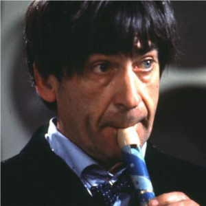

Portrayed by Patrick Troughton
|  | (25 March 1920 – 28 March 1987) was an English actor most widely known for his roles in fantasy, science fiction and horror films, particularly in his role as the second incarnation of the Doctor in the long-running British science-fiction television series Doctor Who, which he played from 1966 to 1969, reappearing in 1973, 1983 and 1985. He was also the first actor to play Robin Hood on television. |